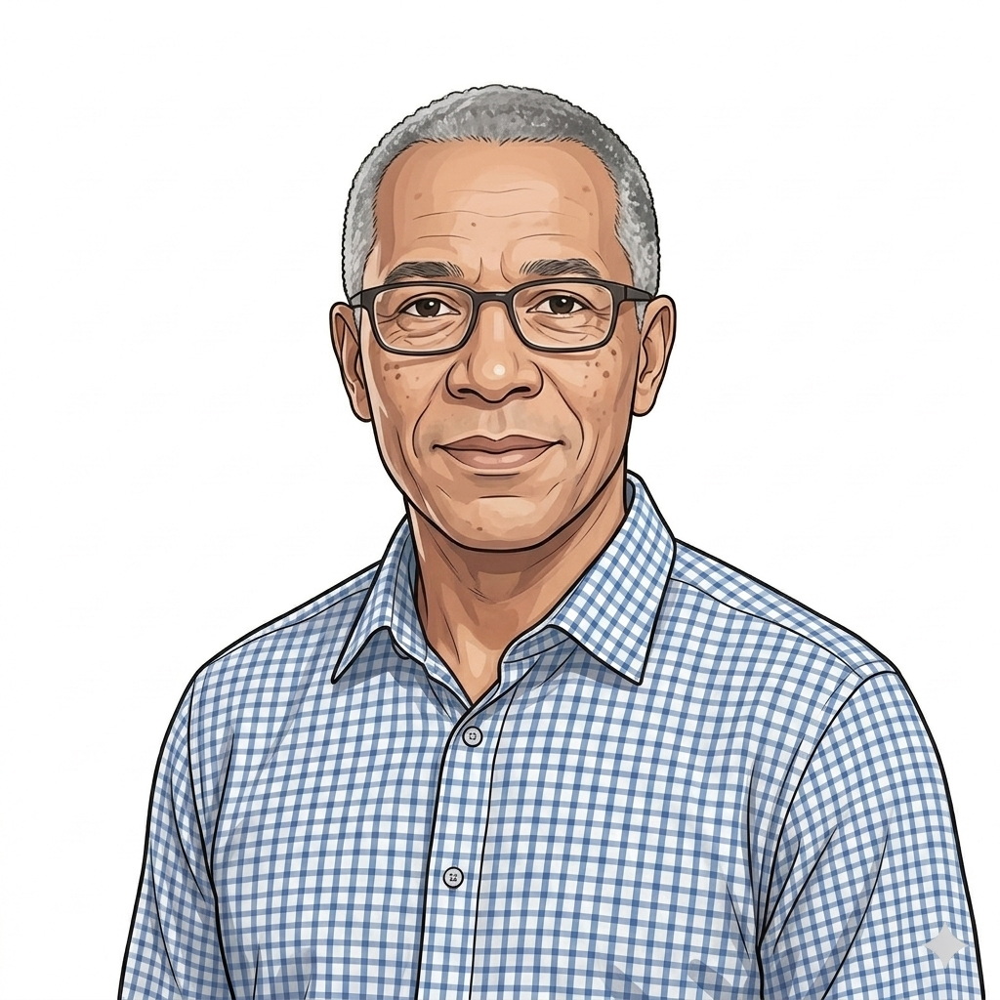

Governance frame
WHO
Governance · who is accountable
Decision rights, accountability, escalation
The other three frames describe what the operating model is, when it runs and how it operates. This frame is what makes it a thing people own rather than a thing people describe. Names against each part of the operating model. Decision rights for changes. Escalation routes when configurations conflict. Without this layer the operating model is a beautiful piece of architecture nobody is responsible for.

Abdul
Patient · CVKM
Informed across most decisions. Consulted on patient-facing changes.

Mark
Patient · PSA-AS
Informed via consultant. Consulted only after clinical review.

Layla
Patient · HbA1c
Informed via GP. Consulted only when GP flags action.
Aisha
Clinical / CSG
Accountable for clinical safety. Consulted on configuration changes.

Sarah
Commissioner
Responsible for local configuration. Informed on framework changes.

Joe
Supplier
Responsible for delivery against call-off. Consulted on framework rules.

Priya
NHSE Platform
Responsible for foundation integrity. Accountable for platform standards.

David
NHS Commercial
Accountable for the framework. Responsible for catalogue integrity.

Ngozi
IG / DPO
Accountable for DPIA, DSA and controller designation. Consulted on every data flow.
Accountability across the four levels
RACI for the operating-model elements rather than for tasks. Who is responsible for the integrity of the foundation, who for each overlay, who for the pattern catalogue, who for each live configuration.
| Element | Responsible | Accountable | Consulted | Informed |
|---|---|---|---|---|
| Foundation (Level 1) The universal foundation. Integration, identity, comms, onboarding gateway, IG framework, clinical safety case structure, hazard log structure, MI / data flows. |
TBC | TBC | TBC | TBC |
| Information governance overlay DPIA, DSA, DPA, IAO, controller designation, lawful basis. The data side of every configuration. |
Ngozi (IG / DPO) | Ngozi (IG / DPO) | SRO, NHS Legal, Caldicott Guardian | Aisha, Priya, David, commissioner, supplier |
| Initiation overlay Patient-init, Clinician-init, GP-init. |
TBC | TBC | TBC | TBC |
| Commissioning overlay LA, Acute trust, ICB, NHSE. |
TBC | TBC | TBC | TBC |
| Supply chain overlay All-inclusive, Specialist + logistics split, Pathology network led. |
TBC | TBC | TBC | TBC |
| Commercial overlay Per-completed, Activity-based, Volume-tiered. |
TBC | TBC | TBC | TBC |
| Tariff treatment overlay Commissioner-paid, Acute envelope, NHS Payment Scheme. |
TBC | TBC | TBC | TBC |
| Accreditation bar overlay UKAS / ISO, Capillary draw, Microsampling. |
TBC | TBC | TBC | TBC |
| Sign-off route overlay Sex health service, Acute trust governance, Primary care. |
TBC | TBC | TBC | TBC |
| Result handling overlay Patient-direct, Clinician-first, Hybrid. |
TBC | TBC | TBC | TBC |
| Pattern catalogue (Level 3) The library of pattern options inside each overlay. |
TBC | TBC | TBC | TBC |
| HIV configuration The live deployment in Salford via SH:24. |
TBC | TBC | TBC | TBC |
| PSA configuration The prospective deployment via acute trust + specialist lab. |
TBC | TBC | TBC | TBC |
R · Responsible · does the work
A · Accountable · signs off, single owner
C · Consulted · two-way input before decision
I · Informed · one-way update after decision
Operational accountability: Foundation
Activities that run universally across every configuration. Roles, not named individuals. Foundation operational responsibility cuts across all configurations and is held centrally.
| Activity | Responsible | Accountable | Consulted | Informed |
|---|---|---|---|---|
| Platform integration uptime NHS App, NHS Login, NHS Notify, supplier APIs. |
NHSE Platform Operations | NHSE Platform Lead | Suppliers | All Commissioners |
| Supplier onboarding gateway Seven-stage onboarding journey for new suppliers joining the platform. |
Supplier Onboarding Team | Commercial Lead | Clinical Safety Officer, IG Lead, Procurement Lead | All Commissioners |
| Hazard log structure maintenance The framework that hazards across configurations get logged into; not the hazards themselves. |
NHSE Clinical Safety Officer | National Assurance Board | Clinical Safety Group, Configuration Clinical Leads | All Configurations |
| IG framework maintenance The federated multi-controller framework all deployments inherit. |
NHSE IG Lead | National Assurance Board | DPO at each deploying organisation, Configuration IG Leads | All Configurations |
| Pattern catalogue maintenance The library of pattern options inside each overlay. |
Commercial Lead | SRO | Clinical Safety Officer, IG Lead, Procurement Lead | All Configurations |
| Cross-platform incident triage Incidents affecting multiple configurations or the foundation itself. |
NHSE Platform Operations | NHSE Programme Lead | Affected Configuration Leads | All Configurations |
| MI and data flow integrity Foundation-level reporting and analytics across configurations. |
NHSE Data Team | NHSE Platform Lead | Suppliers | All Commissioners |
Operational accountability: HIV configuration
Activities specific to the HIV deployment (LA-commissioned, patient-init, all-inclusive supplier, sex health service governance, patient-direct results). Roles named, not individuals.
| Activity | Responsible | Accountable | Consulted | Informed |
|---|---|---|---|---|
| Eligibility and ordering Patient self-service in the NHS App. |
NHSE Platform | LA Sex Health Service Commissioner | Patient | Test Supplier |
| Kit dispatch and logistics All-inclusive supplier model. |
Test Supplier | LA Sex Health Service Commissioner | NHSE Platform | Patient |
| Sample analysis and lab turnaround UKAS / ISO accredited lab inside the supplier. |
Test Supplier Lab | LA Sex Health Service Commissioner | NHSE Platform | Patient (turnaround SLA only) |
| Result return: non-reactive Result direct to the NHS App; prevention signposting; journey ends. |
NHSE Platform / Test Supplier | LA Sex Health Service Commissioner | Sex Health Service Clinical Lead | Patient |
| Result return: reactive Result triggers urgent clinical pathway; sex health service contacts patient; confirmatory testing. |
Sex Health Service Clinical Lead | Sex Health Service Clinical Lead | HIV Specialist Service, NHSE Platform | Patient, GP (with consent) |
| Clinical handover: reactive to specialist HIV team Transfer of clinical responsibility once a reactive is confirmed. |
Sex Health Service Clinical Lead | Sex Health Service Clinical Lead | HIV Specialist Service | Patient, NHSE Platform |
| Patient signposting (non-reactive: prevention) Routine prevention messaging through NHS App. |
NHSE Platform | LA Sex Health Service Commissioner | Sex Health Service Clinical Lead | Patient |
| Hazard arising in HIV pathway Anything in the live service that breaches the hazard log. |
Whoever observed | Sex Health Service Clinical Lead | NHSE Clinical Safety Officer, Clinical Safety Group | LA Commissioner, NHSE Platform |
| IG breach in HIV pathway Personal data exposed, lost, or shared without lawful basis. |
LA DPO | LA Sex Health Service Commissioner | NHSE IG Lead, NHSE DPO | Patient (per ICO guidance), CQC |
| Supplier SLA review (HIV-specific) Performance against contracted SLAs for the HIV configuration. |
LA Sex Health Service Commissioner | LA Sex Health Service Commissioner | NHSE Platform Performance, Test Supplier | Commercial Lead |
| Patient complaint or feedback Triage and resolution of patient-raised concerns. |
Test Supplier (first contact) then Sex Health Service | LA Sex Health Service Commissioner | NHSE Platform | NHSE Platform Performance |
Operational accountability: PSA configuration
Activities specific to the PSA deployment (acute trust commissioning, clinician-init, specialist lab + logistics split, capillary draw, clinician-first results, acute trust governance). Roles named, not individuals.
| Activity | Responsible | Accountable | Consulted | Informed |
|---|---|---|---|---|
| Patient identification and selection From the active surveillance list. |
Acute Trust Consultant | Acute Trust Specialist Service Lead | Patient, GP | NHSE Platform |
| Test request Clinician-initiated request to despatch a kit to the patient. |
Acute Trust Consultant | Acute Trust Specialist Service Lead | Patient | Logistics Supplier, Specialist Pathology Lab |
| Kit dispatch (capillary draw kit) Logistics-only supplier, no lab inside. |
Logistics Supplier | Acute Trust Commissioner | NHSE Platform | Patient |
| Sample analysis (specialist lab) Specialist pathology lab, separately contracted. |
Specialist Pathology Lab | Acute Trust Commissioner | Acute Trust Consultant | Patient (turnaround SLA only) |
| Result return to consultant Numeric result, not yet visible to patient. |
Specialist Pathology Lab | Acute Trust Consultant | NHSE Platform (delivery channel only) | Acute Trust admin |
| Result interpretation Reading the value in context of trend and surveillance protocol. |
Acute Trust Consultant | Acute Trust Consultant | Multidisciplinary team if escalation needed | Patient (after clinician review) |
| Clinical handover: in range, continue surveillance Routine path; no escalation. |
Acute Trust Consultant | Acute Trust Consultant | Patient | GP, Acute Trust admin |
| Clinical handover: out of range, escalate Trigger biopsy referral or specialist follow-up. |
Acute Trust Consultant | Acute Trust Consultant | Specialist Urology Service, MDT | Patient, GP, Acute Trust admin |
| Patient communication of result After clinician review; via NHS App and clinic channel. |
Acute Trust Consultant | Acute Trust Consultant | NHSE Platform (delivery channel) | Acute Trust admin, GP |
| Hazard arising in PSA pathway Examples: range misinterpretation, missed escalation, monitoring gap. |
Whoever observed | Acute Trust Clinical Safety Officer | NHSE Clinical Safety Officer, Clinical Safety Group | Acute Trust admin, NHSE Platform |
| IG breach in PSA pathway Personal data exposed, lost, or shared without lawful basis. |
Acute Trust DPO | Acute Trust Commissioner | NHSE IG Lead, NHSE DPO | Patient (per ICO guidance), CQC |
| Supplier SLA review (PSA-specific) Performance against contracted SLAs for the PSA configuration. Two suppliers: logistics and specialist lab. |
Acute Trust Commissioner | Acute Trust Commissioner | NHSE Platform Performance, Specialist Lab, Logistics Supplier | Commercial Lead |
Decision rights for key changes
Who decides what when a change is proposed. Used when a configuration needs a pattern that does not yet exist, when a pattern needs to change, when an overlay needs a new pattern added, or when a procurement regime change is on the table.
Add a new condition to the platform (e.g. Use Case 3, GP-pressures relief)
Decision: whether to add the condition; which patterns to pick from each overlay; whether any new patterns are needed.
RolesCommercial Lead recommends. SRO / SLT approves. Configuration Clinical Leads consulted.
Add a new pattern to an existing overlay
Decision: whether the pattern is sufficiently distinct to warrant a new entry; whether it conflicts with existing patterns; what the assurance bar is for the new pattern.
RolesCommercial Lead decides. SRO accountable. Clinical Safety Officer and IG Lead consulted. All Configurations informed.
Change or refresh an existing pattern
Decision: whether the change is material enough to require re-assurance; whether the change affects existing live deployments; what the transition path is for existing users.
RolesCommercial Lead decides. SRO accountable. Clinical Safety Officer and IG Lead consulted. All Configurations informed.
Approve the operating model itself for SLT sign-off
Decision: whether the operating model is fit to recommend to SLT, whether to publish externally, whether to anchor the recommendation paper on it.
RolesCommercial Lead recommends. Senior Responsible Owner and Head of Product and Technology approve.